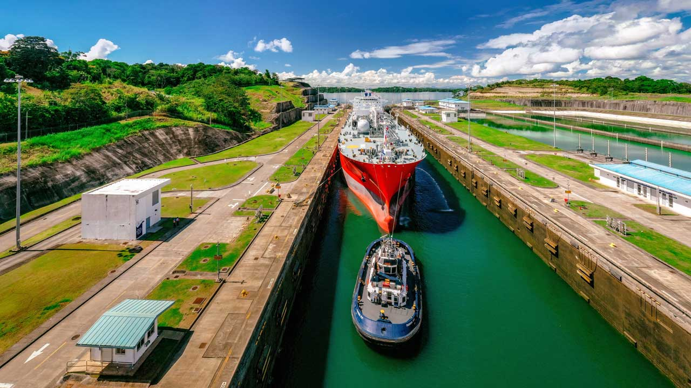

El Canal de Panamá es una de las obras de ingeniería más importantes del mundo y el principal atractivo turístico del país. Esta vía acuática de 82 kilómetros conecta los océanos Atlántico y Pacífico, permitiendo el paso de miles de embarcaciones cada año.
Los visitantes pueden observar el funcionamiento de las esclusas desde el Centro de Visitantes de Miraflores, donde también se encuentra un museo interactivo que explica la historia y construcción del canal. Es impresionante ver cómo los enormes barcos son elevados y descendidos a través del sistema de esclusas.

